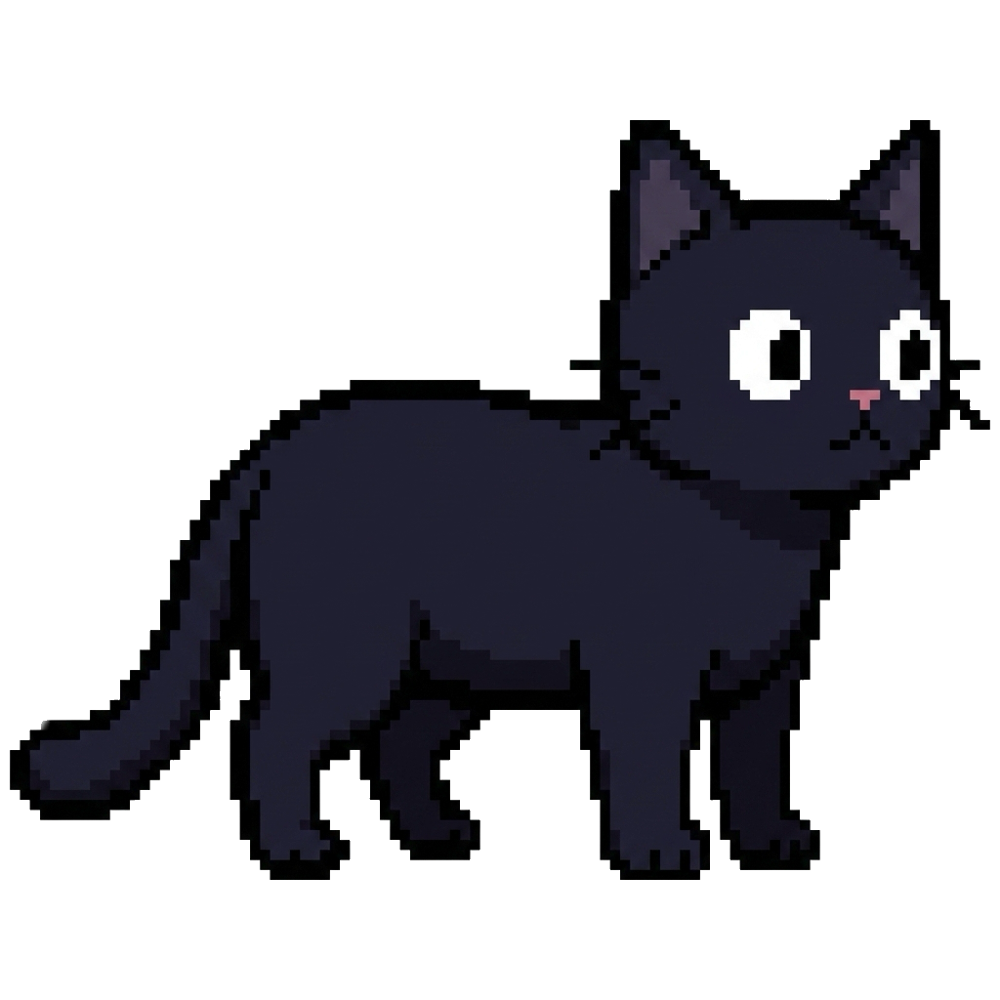
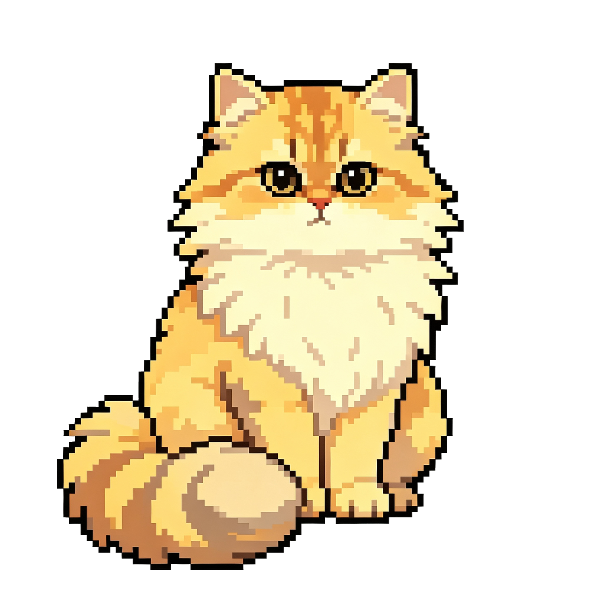
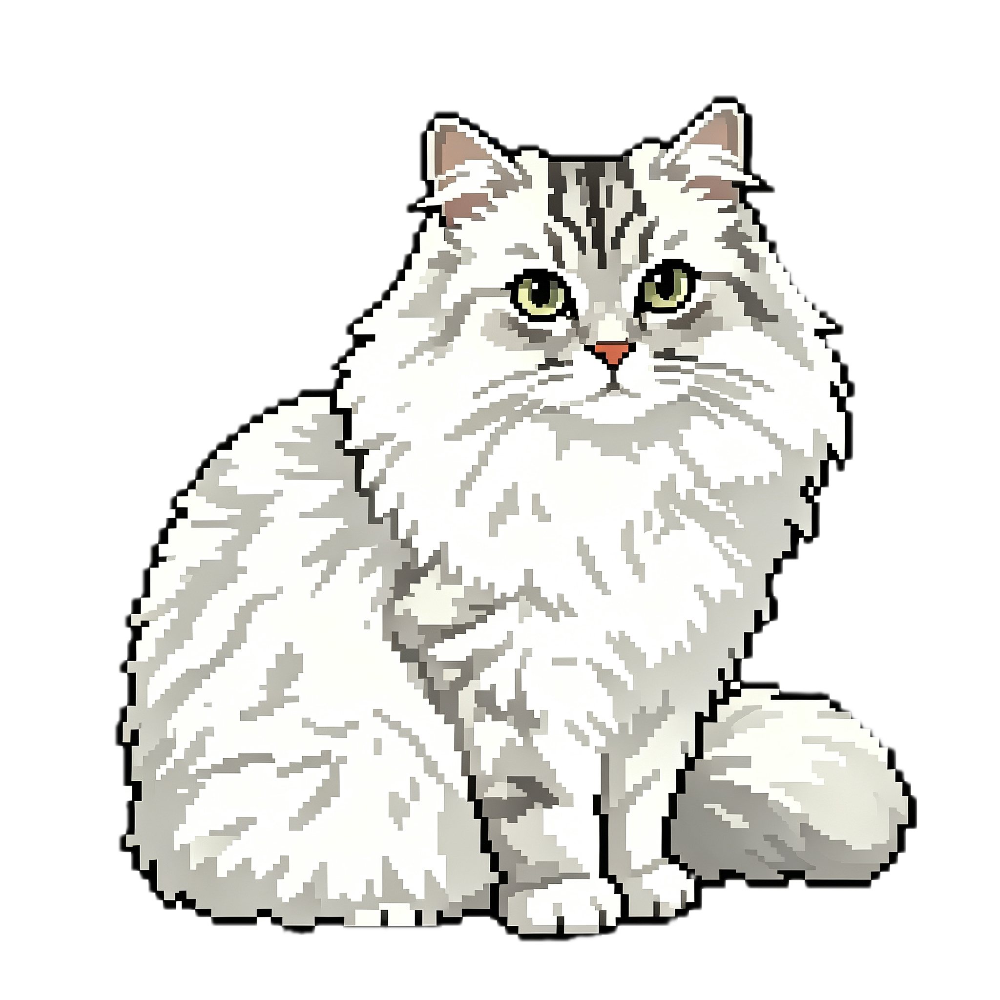

Agent Monitor · 新宠物形态
精细像素风 · 八种表情 · 逐像素呼吸动画
现有猫咪 · 风格参考

皮蛋 · british-blue
豆花 · douhua-cat
花卷 · huajuan-cat奶龙
48 px 实际尺寸
72 px 实际尺寸
96 px 实际尺寸
哆啦 A 梦
待机
思考
互动
庆祝
睡觉
等候
48 px 实际尺寸
72 px 实际尺寸
96 px 实际尺寸
啼魂
48 px 实际尺寸
72 px 实际尺寸
96 px 实际尺寸